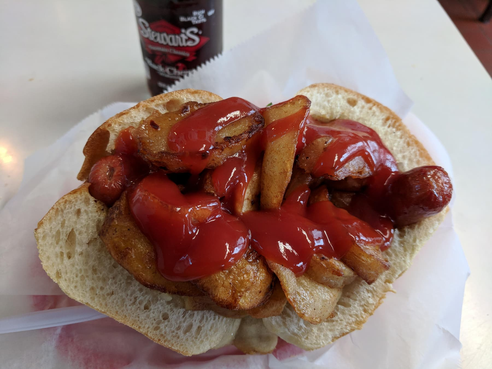

Italian Hot Dog

Description
A recipe for an NJ-style Italian Hot Dog.
Ingredients
- Italian roll / pizza bread
- 1 to 2 green peppers, sliced
- 1 sliced onion
- potatoes cut into wedges or chunks
- hot dogs, natural casing if possible
- ketchup and/or mustard
- salt
Steps
- Fry the potatoes in oil, adding salt once browned
- Remove potatoes and brown the peppers and onions, salting when done
- Fry hot dogs in oil to taste
- Add mustard to inside of roll if desired. Place hot dog in roll and and add vegetables until roll is full.
- Top with ketchup if desired and enjoy.